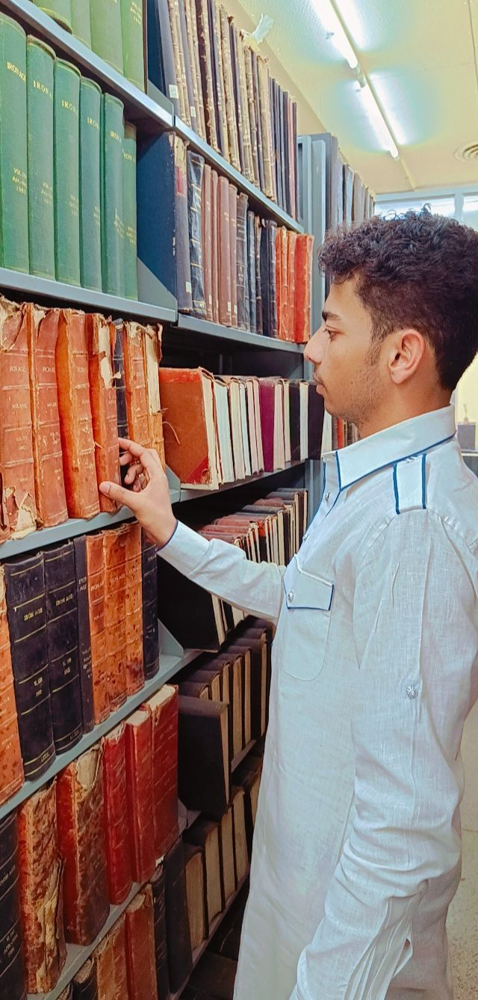
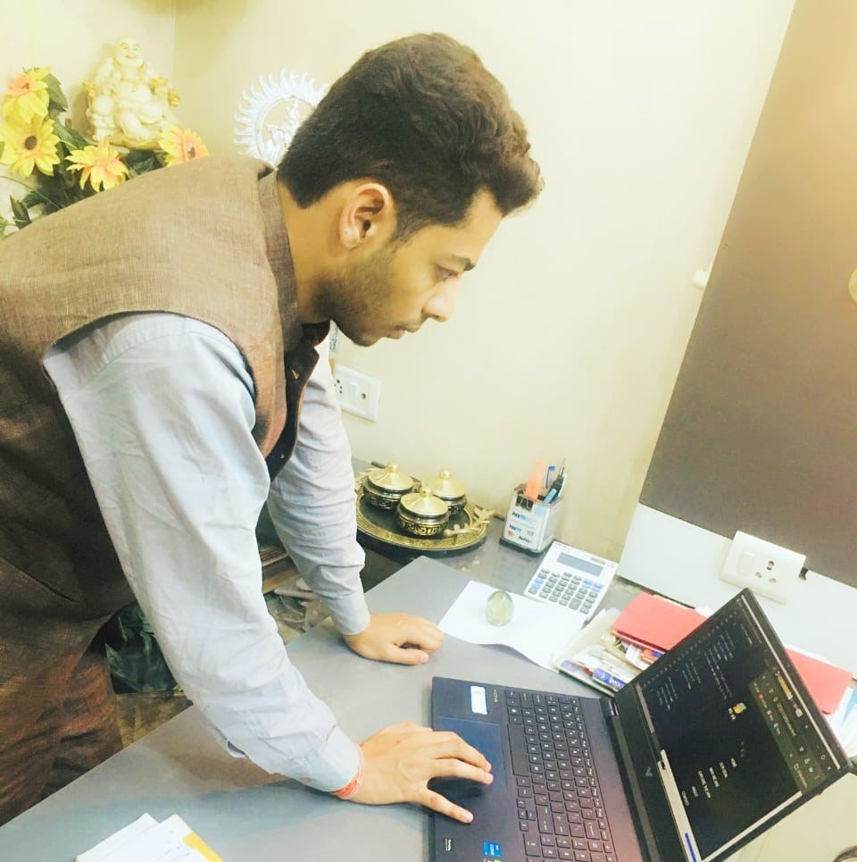

Photo Gallery




.jpg)

Innovative Technologist | Software Engineering | Aerospace Software Specialist | Creative Web & App Developer | UI/UX Design Expert | Data Analytics Specialist | AI Solutions Architect | Full-Stack Developer | Digital Experience Designer | Machine Learning Expert | Robotics Systems Engineer | Geospatial Data Expert | Tech Entrepreneur | Sustainability Advocate | Architectural & Design Visionary | Creative Solutions Innovator | Strategic Technologist | User-Centered Design Specialist | Environmental Technology Specialist | Advanced Web Development Expert
Hello! I am a passionate developer with expertise in modern web technologies. I create engaging and advanced solutions to bring ideas to life. Rishabh Rathore is a highly innovative and multi-talented student currently pursuing a Bachelor of Science in Computer Science and Data Analytics at IIT Patna. With a strong foundation in both Computer Science Engineering and Aerospace Software Engineering, Rishabh combines technical expertise with creative problem-solving to address complex challenges in both the digital and physical realms. Key Areas of Expertise: Web & App Development: Rishabh is a creative web and app developer, skilled in designing modern, responsive, and user-centric platforms that integrate advanced technologies like AI, AR, and Data Analytics. UI/UX Design: With an eye for design, he crafts seamless and interactive user experiences that blend functionality with aesthetics. Machine Learning & Data Analytics: His work in AI and Data Analytics spans areas such as predictive analytics, intelligent systems, and machine learning algorithms. Sustainability & Environmental Technology: Rishabh is passionate about sustainable development, having worked on projects related to climate change and geospatial data. Achievements: Galactic Problem Solver in the NASA Space Apps Challenge 2024, recognized for innovative solutions addressing global and space challenges. Participant in National Youth Parliament Festival 2023 and the National Debate Competition 2023. Certified in various advanced courses including Machine Learning, Biomedical Imaging, and Geodata Processing from esteemed institutions like NIT Rourkela, NIT Tiruchirappalli, and ISRO. Founder of Rishabh Enterprises, providing specialized services in Computer Science, Python Programming, and Website Development. Personal Interests: Rishabh's interests extend beyond technology, with a deep passion for arts, design, spirituality, and welfare work. He enjoys painting, interior design, and architectural designing, reflecting his creativity in both technical and artistic fields. He is also committed to sustainable development and frequently visits Indian spiritual and historical places, blending his technical mindset with a deep appreciation for culture and history. Rishabh's vision is to use technology not only to innovate but also to make a positive impact on society and the environment. His academic journey and professional pursuits reflect his drive to integrate technology with creativity to solve real-world problems.
1.Web & App Development: - Proficient in developing responsive, user-centric websites and applications. - Expertise in HTML, CSS, JavaScript, and frameworks like **React**, **Angular**, and **Vue.js**. - Familiar with backend development using **Node.js**, **Python**, and **Django**. - Skilled in **API Integration** and **Database Management** with **SQL** and **NoSQL** databases.
2.UI/UX Design: - Expertise in **UI/UX design principles** to create intuitive and visually appealing user interfaces. - Proficient with design tools such as **Adobe XD**, **Figma**, **Sketch**, and **Photoshop**. - Focus on creating interactive, responsive, and seamless user experiences across devices.
3.Machine Learning & Data Analytics: - Strong knowledge of **machine learning algorithms**, data preprocessing, and model evaluation. - Experience with **Python** libraries like **Scikit-learn**, **TensorFlow**, and **Keras**. - Familiar with **data analysis** and visualization tools such as **Pandas**, **Matplotlib**, and **Seaborn**.
4.Artificial Intelligence & Predictive Analytics: - Skilled in implementing **AI models** for various applications, including predictive analytics and automation. - Experience with **natural language processing (NLP)** and **computer vision** projects.
5.Geospatial Data & Geodata Processing: - Knowledge in **geospatial data analysis** and processing using tools like **GIS**, **Python** (GeoPandas), and **remote sensing** technologies. - Certified in **Geodata Processing using Python** from **ISRO**.
6.Robotics & Control Systems: - Understanding of **control systems** and **robotics** engineering, including **instrumentation** and **automation**. - Experience with **robotic system design** and **sensor integration**.
7.Sustainability & Environmental Technology: - Passionate about **sustainable development** and integrating **environmental considerations** into technology solutions. - Knowledge in **climate change visualization** and **sustainability practices**.
8.Entrepreneurship & Business Strategy: - Founder of **Rishabh Enterprises**, providing services in **website development**, **Python programming**, and **computer science solutions**. - Skilled in **project management**, **client relations**, and **business development**.
9.Public Speaking & Debate: - Recognized for his skills in **public speaking**, having participated in national-level debates and forums such as the **National Youth Parliament Festival 2023** and **National Debate Competition 2023**.
10.Creative Design: - Skilled in **graphic design**, **interior design**, and **fashion design**. - Expertise in **architectural design** and creating visually appealing and functional spaces.
These skills showcase Rishabh's diverse capabilities, blending technical knowledge with creativity and a strong focus on solving real-world problems.
Rishabh Rathore's portfolio reflects his diverse skill set and passion for innovation, creativity, and technology. Here's a breakdown of the key elements of his portfolio:
1. Introduction and Background
Rishabh is a Bachelor of Science student in Computer Science and Data Analytics at IIT Patna. He has worked across multiple domains, from Computer Science Engineering to Aerospace Software Engineering, and has a keen interest in AI, web development, UI/UX design, and sustainability.2. Key Projects and Achievements
Truck TranspoLink: A dynamic platform for truck transportation that leverages AI for cost prediction, route optimization, and real-time tracking. NE-AR: An app focused on AR integration for climate change education and real-time solutions, making environmental awareness interactive. Website and App Development: Several advanced and interactive websites, demonstrating skills in responsive design, animations, and advanced features. NASA Space Apps Challenge: Recognized as a Galactic Problem Solver for his efforts to address challenges on Earth and in space. AI-Powered Applications: Integration of AI for predictive systems, automated workflows, and data analysis tools.3. Certifications
IIT Kanpur: Certified in Biomedical Imaging and Tomography and Microscopy Prospective. CSIR-NBRI: Certified in Lifestyle for the Environment. NIT Rourkela: Certified in Machine Learning. Indian Space Research Organisation (ISRO): Certified in Geodata Sharing and Cyber Security and Geodata Processing Using Python. NIT Tiruchirappalli: Certified in Recent Advances in Control and Instrumentation Design Techniques of Robotic Systems.4. Skills and Expertise
Programming Languages: Python, JavaScript, C++, Matlab. Web Technologies: HTML, CSS, JavaScript, React, Node.js. AI/ML: Machine Learning models, predictive analytics. UI/UX Design: Web design with a focus on interactive, responsive, and user-centric interfaces. Data Analytics: Proficient in data collection, analysis, and visualization techniques.5. Interests and Passion
Arts and Crafts, Creativity, Painting, Fashion Design, and Interior Design. Sustainability and Welfare Work with a focus on social causes. Spirituality and visiting Indian Spiritual and Historical Places. Analyzing News and staying updated on global developments. 6. Professional Experience Founder of Rishabh Enterprises: Offering Python programming, Web Development, and Computer Science consulting.7. Recognition and Awards
National Youth Parliament Festival 2023: Participant. National Debate Competition 2023: Participant. Galactic Problem Solver by NASA Space Apps Challenge 2024. Rishabh's portfolio showcases his commitment to integrating technology with creative design, solving real-world problems through innovative solutions, and contributing positively to society and the environment.Passionate about technology, I explore innovative ways to solve problems and deliver excellence.
Here is the detailed information about **Rishabh Rathore**: ### **Full Name**: **Rishabh Rathore** ### **Current Education**: - **Bachelor of Science (B.Sc.) in Computer Science and Data Analytics** **Institute**: IIT Patna **Duration**: 4 years **Year**: Ongoing ### **Key Areas of Expertise**: - **Computer Science Engineering** - **Aerospace Software Engineering** - **AI and Machine Learning** - **Web Development** - **UI/UX Design** - **Data Analytics** ### **Professional Roles**: - **Website & App Developer**: Skilled in front-end and back-end development, with expertise in creating advanced and responsive websites and applications. - **Innovator**: Involved in creating solutions for real-world problems using technology. - **UI/UX Designer**: Focused on creating intuitive, user-friendly, and aesthetically pleasing designs for web and mobile apps. ### **Recognitions and Achievements**: - **Galactic Problem Solver**: Recognized by **NASA Space Apps Challenge 2024** for outstanding contributions to solving challenges faced on Earth and in space. - **National Youth Parliament Festival 2023**: Participant - **National Debate Competition 2023**: Participant - **Certifications**: - **IIT Kanpur**: Certified in **Introduction to Biomedical Imaging: Tomography and Microscopy Prospective** - **CSIR-National Botanical Research Institute, Lucknow**: Certified in **Lifestyle for the Environment** - **NIT Rourkela**: Certified in **Machine Learning: An Industry Academia Initiative** - **NIT Tiruchirappalli**: Certified in **Recent Advances in Control and Instrumentation Design Techniques of Robotic Systems** - **Indian Space Research Organisation (ISRO)**: Certified in **Geodata Sharing and Cyber Security**, **Geodata Processing Using Python** ### **Founder of Rishabh Enterprises**: - **Rishabh Enterprises** offers **Computer Science and High-Level Language (Python)** consulting and **Website Development Services**. ### **Skills**: - **Programming Languages**: Python, JavaScript, C++, Matlab - **Web Technologies**: HTML, CSS, JavaScript, React, Node.js - **UI/UX Design**: Responsive and interactive web designs - **Machine Learning & AI**: Predictive systems and analytics - **Data Analytics**: Expertise in data processing, analysis, and visualization ### **Interests**: - **Arts and Crafts** - **Creativity** - **Painting and Drawing** - **Architectural and Civil Structural Designing** - **Interior Design** - **Fashion Design** - **Web Design** - **Spirituality** - **Welfare Work** - **Analyzing News** - **Sustainable Development** - **Visiting Indian Spiritual and Historical Places** ### **Personal and Professional Goals**: Rishabh aims to leverage his technical expertise to develop solutions that solve real-world problems, promote sustainability, and integrate advanced technologies such as AI and AR to address global challenges. He is passionate about making a positive impact in both technology and society. --- Rishabh Rathore's profile reflects a combination of academic excellence, technical expertise, creativity, and social responsibility. He is dedicated to using his skills to address pressing challenges while pursuing continuous growth in both technology and design.
Email: Rishabh.Rathore@info.com
Phone: +91.........
Phone: +91.........